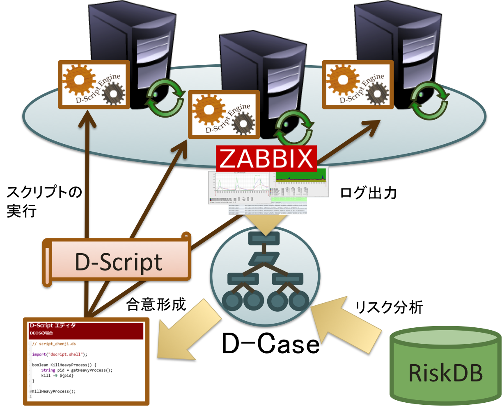
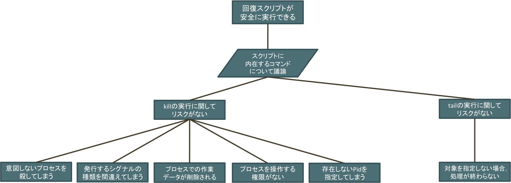
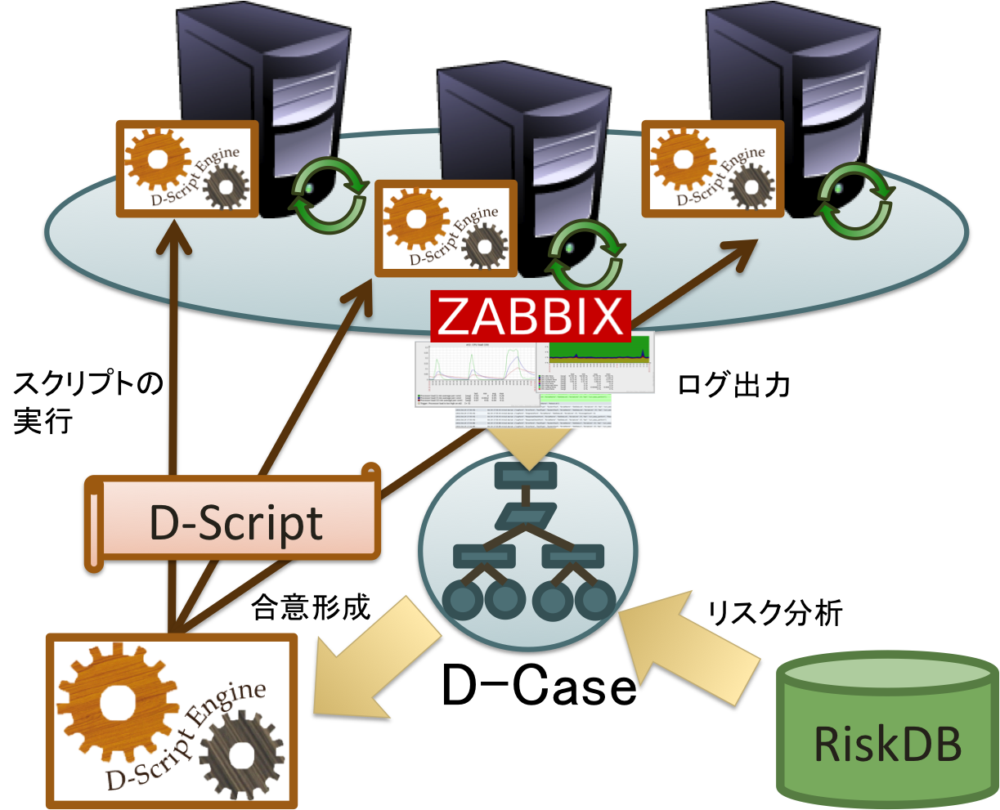

倉光チーム D-Script Demo
概要

システム構成図
dcase-weaver
ストリーミング配信サービス
サーバ監視項目
CPU 使用率
サーバ監視項目
メモリ空き容量
サーバ監視項目
ネットワーク使用率
サーバ監視項目
障害状況
| ホスト名 | 障害内容 | 発生時刻 |
|---|
D-Script エディタ
運用者 ちぇんじぃの場合
D-Script Result
D-Scriptにおける障害要因の診断結果
| API | Line | FaultType |
|---|
D-Script エディタ
DEOSの場合
D-Script Risks
| goal | risk | evidence | skip |
|---|
D-ScriptのD-Case

D-Script Result
Fault Matrix
| API | Line | FaultType |
|---|
要素技術
RiskDB: リスクの自動提案機構
DSE: 分散環境における高信頼スクリプト実行基盤
Risk DB
リスクの自動提案機構
ある単語から，その単語に関するリスクの検索を行うことができます．
日本語の文章を単語単位に分解し，各単語についてのリスクの検索を行うこともできます．
単純な機能なだけに，様々な分野への適用が見込まれ，現在DBのデータ作成の自動化を研究中です．
| risk | dependability goal |
|---|
DSE: DScript Enigine's Architecture
分散環境における高信頼統合実行環境
Konoha-Project
Tiny Konoha: 組み込み向け超軽量スクリプト言語
Konoha 2 JS: 静的型付け言語KonohaからJavaScriptへのソースコード変換機
Tiny Konoha
メモリ64KBで動作する軽量スクリプト言語
スクリプト言語による組み込み機器制御を実現
Konoha 2 JS
静的型付け言語KonohaからJavaScriptへのソースコード変換器
DOMの操作を行い、動的なWebページの構築が可能
まとめ
